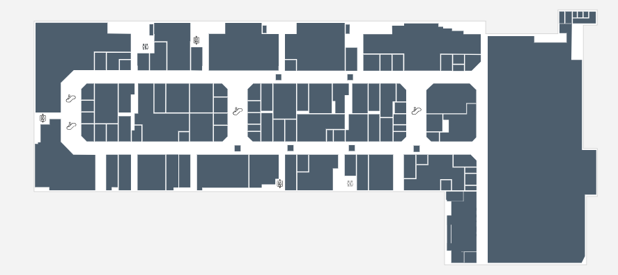

Horarios Abierto todos los días de 10:00 a 22:00. Algunas tiendas pueden tener horarios especiales en festivos o domingos. Consulta directamente con el establecimiento deseado. Los restaurantes y la zona de ocio permanecen abiertos hasta las 00:00 los fines de semana. Dirección Calle de los Químicos, 2, 28222 Majadahonda, Madrid. El centro se encuentra a tan solo 5 minutos del Hospital Universitario Puerta de Hierro y junto al parque empresarial de Majadahonda. Accesos directos desde la M-503 y la M-50, salida 79A. Transporte Público Autobuses: Líneas 123, 456. Estación de tren más cercana: Majadahonda (Línea C-7). Paradas de autobús justo en la entrada principal del centro comercial. Aparcabicis disponibles en la entrada norte para quienes lleguen en bicicleta. Parking Disponemos de un amplio aparcamiento subterráneo con más de 1,000 plazas. Las dos primeras horas son gratuitas todos los días. Existen plazas reservadas para personas con movilidad reducida, familias con niños pequeños y motocicletas. También contamos con zonas de aparcamiento rápido para recogida de pedidos online. Datos de Contacto Teléfono: 912 345 678 Email: contacto@granplaza2.com Dirección: Calle Ficticia 123, Madrid, España Atención al cliente disponible de lunes a viernes de 9:00 a 18:00. También puedes contactarnos a través de nuestras redes sociales para resolver dudas rápidas: Facebook Twitter Instagram Otros Servicios Wi-Fi gratuito en todo el centro con conexión segura y rápida. Guardería disponible con personal cualificado y zonas seguras de juego. Puntos de carga para vehículos eléctricos en el nivel -1. Zonas de descanso con sofás y estaciones de recarga USB. Centro pet-friendly con bebederos y áreas para mascotas en exteriores. Espacio solidario para donaciones y campañas benéficas mensuales. 